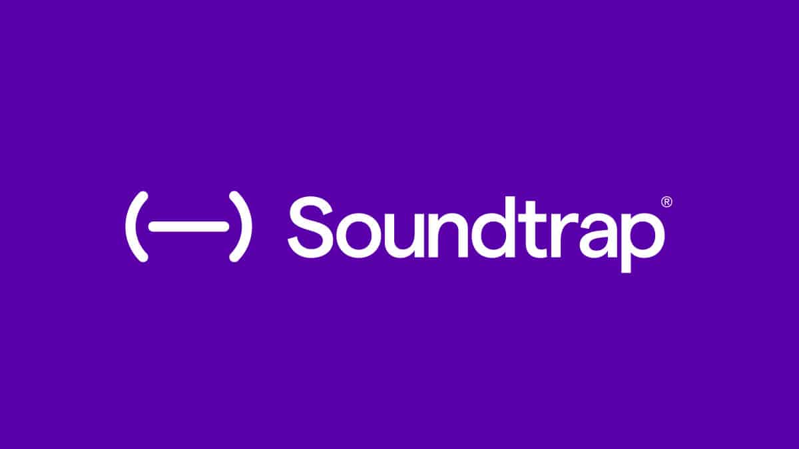

|
I used Sublime text this summer to code this website and flappy bird Sublime text is really helpful because you can freelance code with any program that you want to use. |

Soundtrap is the website tat I make my beats on. Soundtrap is the base of my beat making career because I started making beats on here. I have gotten better and better at making beats using soundtrap. Later on, I plan on using FL studio because that is advanced for beatmakers. |